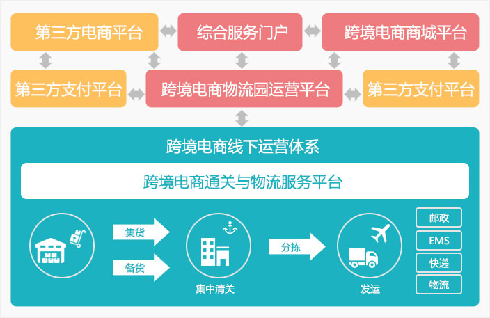

驼铃软件为您助力跨境电商公共服务
跨境电商公共服务解决方案
跨境电商公共服务平台是具备开展跨境电商贸易的城市，为了发
展当地跨境电商贸易与促进外贸经济的发展和通关阳光化，在当地政
府的认可与扶持下，由政府与企业联合或者由企业独立建设与运营的
专门支撑跨境电商贸易进出口业务运作的线上信息平台与线下跨境电
商物流中心的统称。如果平台运营企业或组织除了承担跨境电商阳光
化通关职能之外，还开展保税物流、保税商品展示交易、电子商务服
务、 O2O跨境电子商务等综合业务，则将这种类型的服务平台称之为
跨境电商综合服务平台。
背景
近年随着跨境电子商务交易额的不断攀升，远高于外贸的增长速
度。 跨境电商这一新的贸易形势正在改变中国对外贸易的结构和形势，
用一条全新的网上“丝绸之路”连接世界，在战略性新兴产业发展中
有望形成新的经济增长点。
跨境电子商务是指分属不同关境的交易主体，通过电子商务平台
达成交易、进行支付结算，幵通过跨境物流送达商品、完成交易的一
种国际商业活劢。
客户价值
-
通过特定跨境贸易电子商务方式的流程进行出口通关，以实现后续的收结汇和退税。
-
提供便捷的通关流程，提升进出口通关效率，降低成本。
-
提供完整的电商供应链管理，包括精细化仓储管理。
-
为跨境电商公共服务平台运营提供完善的运营管理功能。
-
提供企业服务总线ESB，最大限度实现“公共”性。

跨境电子商务公共服务平台在中间充当了重要角色，服务于电商企业、物流企业和政府。提供物流通关服务、物流园区运营服务、电商商城服务，建立一个保税仓和报通关一体化（含商检、国税、外管）“窗口式”服务系统。该系统服务为交易中的主体电商平台、支付企业、物流企业、电商卖家提供了不同功能的“服务窗口”。其所有交易信息均可通过综合服务窗口提供给不同主体，平台运营人、海关、企业等，与此同时，使得综合数据的分析和汇总变得轻松。解除了多部门之间沟通障碍。
目标
-
1
建立海关、检验检疫、国税、外管等职能部门与电商平台、经营主体之间的信息联系通道。
-
2
进出口商品申报、监管以及物流、支付信息的全流程动态跟踪
-
3
提高通关便利化水平，实现外经、海关、检验检疫、外汇、国税等部门信息共享，为结付汇、免退税等提供凭证依据，推动跨境电子商务健康快速发展
成功案例
-

递四方速递
基于大数据的金融业务创新，为递四方速递公司的信息化建设注入了新的活力。
-

递四方速递
基于大数据的金融业务创新，为递四方速递公司的信息化建设注入了新的活力。
-

递四方速递
基于大数据的金融业务创新，为递四方速递公司的信息化建设注入了新的活力。
-

递四方速递
基于大数据的金融业务创新，为递四方速递公司的信息化建设注入了新的活力。